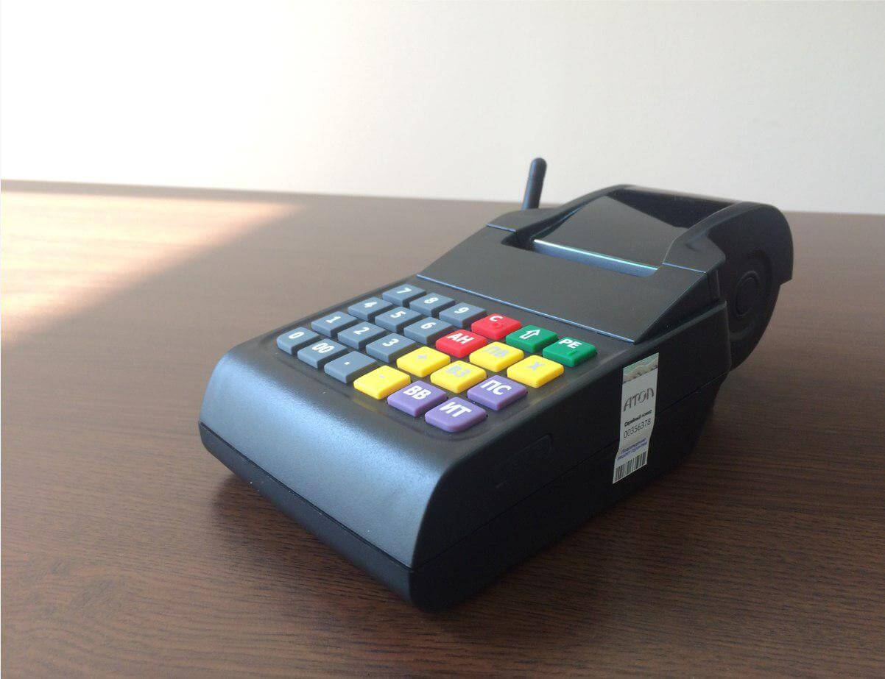
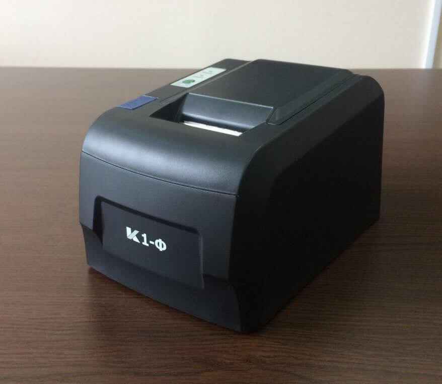
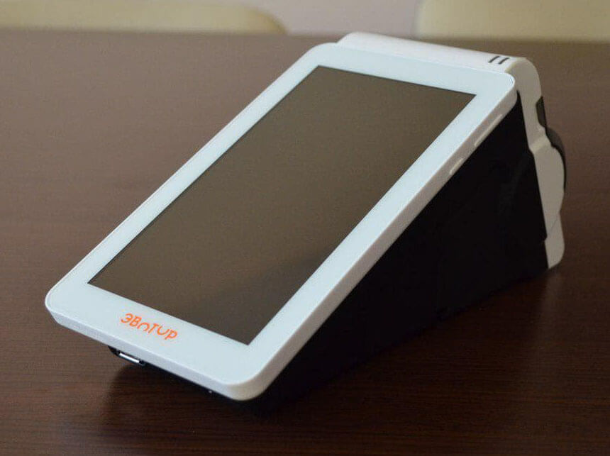
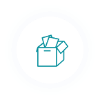

Стоимость комплексных решений
Мы разработали для Вас оптимальные тарифные пакеты, чтобы Вы могли выбирать те опции,которые актуальны именно Вам. Не переплачивайте за ненужные услуги!Онлайн-касса АТОЛ 90ф с подключением
25 300 р.

-
В комплект входят:
- Надежная автономная онлайн-касса АТОЛ 90Ф со встроенным аккумулятором, слотом для сим-карты и фискальным накопителем.
- Оформление КЭП на носителе через удостоверяющий центр.
- Договор с оператором фискальных данных "Астрал.ОФД" на 1 год
- Регистрация ККТ в ФНС и ОФД при помощи наших технических специалистов
- Обучение базовым навыкам работы с новой кассой
- доставка ККТ и КЭП в Ваш офис по г. Москва
Онлайн-касса К1-Ф + 1С розница за
29 590 р.

-
Комплект объединяет в себе:
- Фискальный регистратор К1-Ф с фискальным накопителем
- Оформление КЭП на носителе через удостоверяющий центр.
- Договор с оператором фискальных данных "Астрал.ОФД" на 1 год
- Регистрация ККТ в ФНС и ОФД при помощи наших технических специалистов
- Доставка ККТ и КЭП в Ваш офис по г. Москва
- Выезд специалиста в Ваш офис для настройки 1С:Розница 8 и установки ККТ
- Коробочная версия 1С:Розница 8. Базовая версия
Онлайн-касса Эвотор с подключением
35 855 р.

-
Комплект объединяет в себе:
- Онлайн ККТ Эвотор по 54-ФЗ с фискальным накопителем и встроенным товарно-учетным ПО для Вашего бизнеса.
- Оформление КЭП на носителе через удостоверяющий центр.
- Договор с оператором фискальных данных "Астрал.ОФД" на 1 год
- Регистрация ККТ в ФНС и ОФД при помощи наших технических специалистов
- Обучение базовым навыкам работы с новой кассой
- Доставка ККТ и КЭП в Ваш офис по г. Москва
Наши преимущества
Пакетные решения без дополнительных финансовых затрат
Регистрация ККТ без визита ФНС
Кассовое оборудование от ведущих производителей
Внимательное отношение к каждому клиенту
Техническая поддержка по КЭП и ОФД
Как подключиться:
Оставьте заявку или позвоните по телефону8 (495) 663-73-58 доб. 773
Подготовьте пакет документов (список Вам предоставят наши менеджеры)
 Оплатите выставленный счет
Оплатите выставленный счетПолучите готовую онлайн-кассу в свой офис